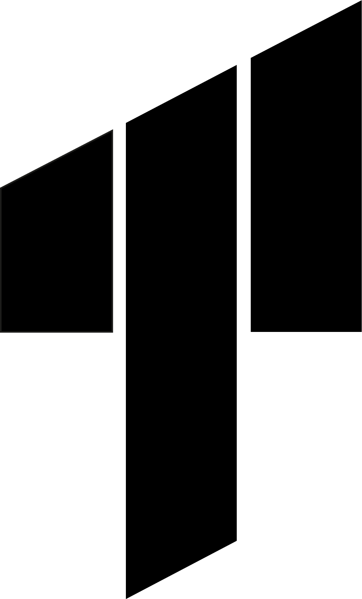
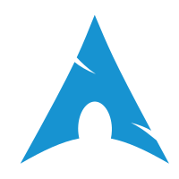

koraynilay's stuff
- INTP 5w6 sp/sx
- Italian/English/Japanese (kinda sus tho)
- Birthday: 17/05
- OS: Arch Linux x86_64, Windows 10 AME (rarely used)
- Shell: zsh (with oh-my-zsh)
-
Monitor:
- LG 24GN53A (24" 1920x1080 @ 144.00Hz)
- Asus VA27EHE (27" 1920x1080 @ 60.00Hz)
- WM: i3
- Theme: Sweet-Dark [GTK2], Sweet-Dark [GTK3]
- Icons: Windows-10-master [GTK3]
- Terminal: termite
- CPU: Intel i5-6400 (4) @ 3.300GHz
- GPU: NVIDIA GeForce GTX 1060 6GB
- RAM: 16 GB DDR4 2133 MT/s
- Font: Tw Cen MT 12 [GTK2/3]
- Music Player: mpd
-
Storage: 14 TB (total)
- 480 GB SSD (SATA)
- 500 GB HDD
- 1 TB HDD
- 4 TB HDD
- 8 TB HDD

T.I.M.Warfare Clan Homepage
VNDB
koraynilay
MyAnimeList
koraynilay
Discord
koraynilay
Steam
koraynilay
Github
koraynilay
koray.fra@gmail.com
u/koraynilay
YouTube
@koraynilay4108
Osu! (but I play on osu!lazer)
koraynilay
koray_nilay
GitLab
koraynilay
Monkeytype
koraynilay
koraynilay

AUR packages
koraynilay
Human Benchmark
koraynilay
Telegram
koraynilay
ListenBrainz
koraynilay
Built with LittleLink.